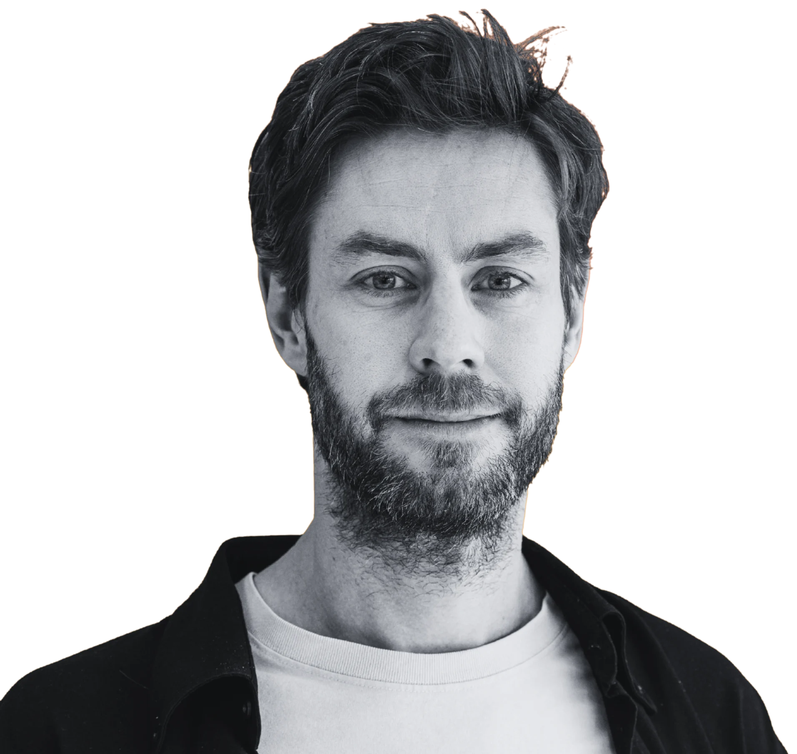

Je team draait, maar het bruist niet
Deadlines worden gehaald, iedereen levert. Toch mist er iets. De samenwerking voelt stroef en je krijgt de vinger niet op de zere plek.
De meeste teams steken hun energie in wat niet goed gaat. Ik help je het omdraaien. Ontdek waar de kracht van je mensen zit en zet die gericht in. Met CliftonStrengths van Gallup als fundament werk je aan meer energie, scherpere samenwerking en betere resultaten.
30 minuten, vrijblijvend. Geen verkooppraatje. Je loopt sowieso weg met één concreet inzicht over je team.
Talent Investment Strength
Een talent is een natuurlijk patroon in denken, voelen of doen. Investeer je erin, dan wordt het een kracht waar je elke dag op kunt bouwen.
Wat het oplevert
Gallup onderzocht het bij miljoenen medewerkers wereldwijd. Teams die hun talenten kennen en gericht inzetten, presteren beter en hebben meer plezier in hun werk.
zo betrokken zijn mensen die hun talenten dagelijks gebruiken
vaker een hoge kwaliteit van leven
lager personeelsverloop in teams die bouwen op talent
Bron: Gallup, meta-analyse strengths-based ontwikkeling.
Klinkt dit bekend?
Deadlines worden gehaald, iedereen levert. Toch mist er iets. De samenwerking voelt stroef en je krijgt de vinger niet op de zere plek.
Je ziet het talent, maar het komt er niet uit. Ontwikkelgesprekken blijven hangen bij targets en functioneren. Zelden gaan ze over wat iemand écht goed kan.
Taken zijn verdeeld op functie, niet op talent. Mensen doen werk dat hen energie kost, terwijl hun sterkste kant onbenut blijft.
Onbenut talent verdwijnt niet. Het loopt alleen op een dag de deur uit.
Hoe ik werk
CliftonStrengths is meer dan een test. Het is een manier van kijken: je bouwt een team op wat mensen van nature goed kunnen, in plaats van eindeloos te sleutelen aan wat ze niet kunnen. Gallup onderzocht decennialang wat sterke teams onderscheidt. Dat onderzoek is het fundament onder mijn aanpak.
Ieder teamlid maakt de CliftonStrengths-assessment en krijgt een persoonlijk rapport met alle 34 talenten op volgorde. Vooraf voer ik met iedereen een intakegesprek aan de hand van dat rapport. In de teamsessie, die ik altijd op maat maak, brengen we alle talenten samen in een team grid. In één oogopslag zie je waar de kracht van het team zit, waar het scheef hangt en hoe mensen elkaar aanvullen. Je gaat naar huis met concrete afspraken waar je meteen mee aan de slag kunt.
Je maakt de CliftonStrengths-assessment en krijgt je volledige rapport met alle 34 talenten. In een coachingsessie van 90 minuten duiken we in je belangrijkste talenten: wat betekenen ze in je werk, waar geven ze je energie en hoe zet je ze bewuster in? Je loopt naar buiten met scherp zicht op je eigen kracht.
Een gesprek hoeft niet aan een vergadertafel. Een deel van de sessies kunnen we buiten doen, wandelend in de natuur. Beweging maakt het hoofd vrij, gesprekken lopen makkelijker en inzichten komen vanzelf. De aanpak blijft hetzelfde, alleen de omgeving verandert.

Wie ik ben
Mijn manier van kijken komt van het honkbalveld. Ik speelde jarenlang op niveau, en in topsport draait alles om de juiste mensen op de juiste plek, met talenten die elkaar aanvullen. Een winnend team bestaat uit spelers die ieder iets anders inbrengen en op elkaar ingespeeld raken. Je rekt niemand op tot iets wat hij niet is. Je scherpt aan wat er al in zit.
Op kantoor zijn we dat vreemd genoeg vergeten. Daar gaat onze aandacht vooral naar wat mensen nog niet kunnen, naar ontwikkelpunten en gaten dichten. Ik draai het liever om. Toen ik CliftonStrengths van Gallup tegenkwam, viel het op zijn plek. Het is een manier om precies dat sportprincipe naar teams te vertalen. Inmiddels ben ik er officieel in gecertificeerd als Gallup-Certified Strengths Coach.
In de jaren daarna werkte ik aan persoonlijke ontwikkeling en talentontwikkeling in uiteenlopende rollen, van scale-ups tot corporates. Nu doe ik dat als Talent & Culture Manager bij een Nederlands platformbedrijf. Ik coach er dagelijks medewerkers en bouw teams die draaien op ieders kracht.
Waar ik het voor doe, is dat ene moment dat iemand doorkrijgt waar zijn kracht zit en je het vertrouwen ziet groeien. Mensen zien dan opeens wat er altijd al in zat.
Buiten werk vind je me op de trail of in een triatlon. Lange afstanden, eigen tempo, blijven gaan. Zo kijk ik ook naar ontwikkeling. Het draait om volhouden in de goede richting.
Laten we dertig minuten praten. Vrijblijvend, zodat we samen ontdekken of het klikt.
30 minuten, vrijblijvend. Geen verkooppraatje. Je loopt sowieso weg met één concreet inzicht over je team.